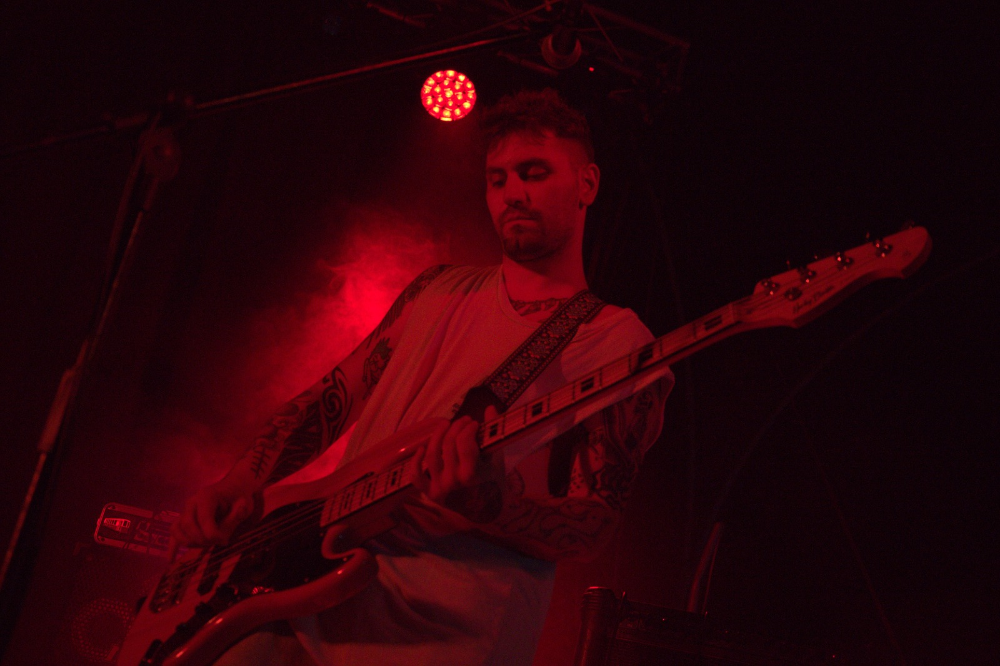

Salvatore MOODY Di Majo
Autore & Producer
Salvatore MOODY Di Majo è autore e producer, attivo nella scrittura, nella produzione e nello sviluppo artistico di brani originali.
Il suo lavoro si concentra sulla costruzione dell’identità sonora dell’artista, accompagnando ogni progetto dalla fase creativa iniziale fino alla definizione dell’arrangiamento e della produzione.
Con un approccio moderno e attento al linguaggio musicale contemporaneo, lavora su melodie, testi, strutture, sound e direzione artistica, valorizzando le caratteristiche espressive di ogni artista.
All’interno di EMME STUDIO contribuisce alla creazione di produzioni originali, collaborando allo sviluppo di brani inediti e percorsi artistici personalizzati.
Contatti Social